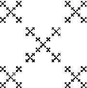

Instructions for the software TreenessEmerging to accompany Chaos Under Control: The Art and Science of Complexity, W. H. Freeman, 1994, by David Peak and Michael Frame
Hardware requirements: Macintosh, 1MB of free memory
System requirements: System 7.0 or higher
David Peak, Michael Frame, and Brian Macherone
With TreenessEmerging we explore Iterated Function Systems (IFS) in three variations: the Chaos Game, the Deterministic Iteration, and Random Iteration.
From the Rules menu we select the rule to be used in the Deterministic Iteration or Random Iteration versions. The choices are
| * | Right Gasket, |
| * | Equilateral Gasket, |
| * | Koch Curve, |
| * | Carpet, |
| * | Fern, |
| * | Lace, |
| * | Tree, and |
| * | Home Made. |
This menu is active only when the Parameters Window is topmost.
From the Window menu we select one of four windows:
| * | Chaos Game, |
| * | Deterministic, |
| * | Random, and |
| * | Parameters. |
When the Deterministic window is topmost, we are presented with
| * | a Run/Stop button, |
| * | a Continue button, |
| * | a Scale scroll bar, |
| * | an X scroll bar, |
| * | a Y scroll bar, and |
| * | eight Image boxes. |
* With the mouse, draw a picture in the upper left Image box. Holding down the mouse button and dragging in the box draws in the box. Releasing the button, the cursor can be moved without drawing. Clicking the button again resumes drawing.
* Clicking the Run button starts the process of applying the IFS rules to every point drawn in the box. When this is done, the Run Button label changes to Stop.
* The process can be interrupted by clicking the Stop button, and resumed by clicking the Continue button.
* Windows in which the iteration is not complete remain active, so the picture can be modified as the iteration progresses.
* Clear in the Edit window clears the last of the eight boxes in which the pointer resided.
* The Scale scroll bar sets the size of the pictures produced by the Deterministic Iteration.
* The X and Y scroll bars set the horizontal and vertical positions of the pictures.
When the Chaos Game window is topmost, we are presented with
| * | a Run/Stop button, |
| * | a Continue button, |
| * | a Reset button, |
| * | a Scaling scroll bar, |
| * | a Speed scroll bar, |
| * | a Draw Lines check box, |
| * | a Draw Vertices check box, and |
| * | Active Window - the large window on the right half of the screen. |
* The corners of the Chaos Game are selected by moving the mouse pointer to the desired point in the Active Window.
* Note the pixel coordinates of the pointer are displayed in a pop up window above the Active Window.
* Clicking the mouse button selects the point as a corner of the chaos game.
* Holding the shift key while clicking the mouse button makes the selected point the starting point of the of the Chaos Game.
* Clicking the Start button begins the Chaos Game. When this is done, the Run Button label changes to Stop.
* The game can be interrupted by clicking the Stop button, and resumed by clicking the Continue button.
* Clicking Stop, then Reset, erases the corners selected and lets us select new corners.
* When Draw Lines is checked, the lines of the Chaos Game are drawn; when Draw Lines is not checked, the lines are erased (though the points generated by the Chaos Game remain in the window).
* When Draw Vertices is checked, the vertices of the Chaos Game are drawn; when Draw Vertices is not checked, the vertices are erased (though the points generated by the Chaos Game remain in the window). By a vertex we mean a point generated by the Chaos Game, but drawn as a small circle for emphasis.
* The Speed scroll bar adjusts the speed with which the Chaos Game is played.
* The Scaling scroll bar the fraction of the distance along a line at which the new point (vertex) is drawn.
Note:
* While the Chaos Game is running, clicking the pointer inside the drawing window adds that point to the list of corners - the game continues with that corner included with the earlier corners.
* The scaling and speed can be changed while the Chaos Game is running, the game continuing with the changed values.
When the Random window is topmost, we are presented with
| * | a Run/Stop button, |
| * | a Continue button, |
| * | a Clear button, |
| * | a Scale scroll bar, |
| * | an X scroll bar, |
| * | a Y scroll bar, |
| * | Cycle boxes, |
| * | Address boxes, and |
| * | Active Window - the large window on the right half of the screen. |
* Clicking the Start button begins the Random Iteration and changes the Run Button label to Stop.
* The iteration can be interrupted by clicking the Stop button, and resumed by clicking the Continue button.
* Clicking Stop, then Clear, erases the picture generated when Run is clicked again.
* The Scale scroll bar sets the size of the pictures.
* The X and Y scroll bars set the horizontal and vertical positions of the pictures.
* To display cycles, draw the picture by clicking the Run button, then stop the drawing by clicking the Stop button. (To best see the cycle, don't let the drawing of the picture fill in too darkly.) Click the cycle entries (top to bottom), changing 0 to 1, 2, ..., n ( = number of transformations), pressing the Return key after entering each cycle number. Click the Cycle checkbox and the Continue button to display the cycle. After stopping, clicking again the Cycle checkbox (removing the check) erases the cycle points.
* To display a region of given address, draw the fractal by clicking the Run button, then stop the drawing by clicking the Stop button. (To best see the region, don't let the drawing of the picture fill in too darkly.) Click the address digits (top to bottom), changing 0 to 1, 2, ..., n ( = number of transformations). Click the Address checkbox and the Continue button the display the region. After stopping, clicking again the Address checkbox (removing the check) erases the address points highlighting the region. Clicking the ClearAddr button removes the dots illustrating the region of given address.
When the Parameters window is topmost we are presented with a table of seven columns and fourteen rows. The columns are for the rule parameters R, S, Theta, Phi, E, F, and Probability. Entries in the table can be changed by darkening them (dragging the cursor across with the mouse or double clicking in the box) and then typing the new number and pressing Return afterward. Changes to the HomeMade rule can be saved.
Return to Mac Software